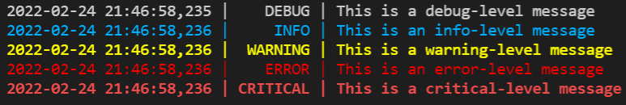

Contents
Logging
There comes a time in the life of a Python package when proper logs beat print() ing to standard output. The standard Python library offers the versatile logging module.
This article explains how to get up and running with logging. You basically have the choice between the basic logging configuration and creating your own custom logger, more easily adapted to meet your specific requirements.
The scenario
Let us suppose you need to log both to standard output and to a file. Furthermore, you want your console output to be colored. If your intention is to avoid bringing new dependencies to your project (otherwise you’d use loguru, or at the very least colorama), you can do this with a bare-bones custom logging.Formatter class and with ANSI escape codes.
The logger
Here is what your logger might look like:
import logging
import datetime
# Create custom logger logging all five levels
logger = logging.getLogger(__name__)
logger.setLevel(logging.DEBUG)
# Define format for logs
fmt = '%(asctime)s | %(levelname)8s | %(message)s'
# Create stdout handler for logging to the console (logs all five levels)
stdout_handler = logging.StreamHandler()
stdout_handler.setLevel(logging.DEBUG)
stdout_handler.setFormatter(CustomFormatter(fmt))
# Create file handler for logging to a file (logs all five levels)
today = datetime.date.today()
file_handler = logging.FileHandler('my_app_{}.log'.format(today.strftime('%Y_%m_%d')))
file_handler.setLevel(logging.DEBUG)
file_handler.setFormatter(logging.Formatter(fmt))
# Add both handlers to the logger
logger.addHandler(stdout_handler)
logger.addHandler(file_handler)
A custom color formatter
For building our own custom formatter, we will extend the logging.Formatter class, give it the log format we want, and instruct it to print out each message level in a distinct color. ANSI escape codes for 8-color, 16-color and 256-color terminals may be found here.
class CustomFormatter(logging.Formatter):
"""Logging colored formatter, adapted from https://stackoverflow.com/a/56944256/3638629"""
grey = '\x1b[38;21m'
blue = '\x1b[38;5;39m'
yellow = '\x1b[38;5;226m'
red = '\x1b[38;5;196m'
bold_red = '\x1b[31;1m'
reset = '\x1b[0m'
def __init__(self, fmt):
super().__init__()
self.fmt = fmt
self.FORMATS = {
logging.DEBUG: self.grey + self.fmt + self.reset,
logging.INFO: self.blue + self.fmt + self.reset,
logging.WARNING: self.yellow + self.fmt + self.reset,
logging.ERROR: self.red + self.fmt + self.reset,
logging.CRITICAL: self.bold_red + self.fmt + self.reset
}
def format(self, record):
log_fmt = self.FORMATS.get(record.levelno)
formatter = logging.Formatter(log_fmt)
return formatter.format(record)
Run it
logger.debug('This is a debug-level message')
logger.info('This is an info-level message')
logger.warning('This is a warning-level message')
logger.error('This is an error-level message')
logger.critical('This is a critical-level message')

The ANSI escape codes can obviously be substituted with colorama, if extra dependencies are not an issue.
Comments
comments powered by Disqus